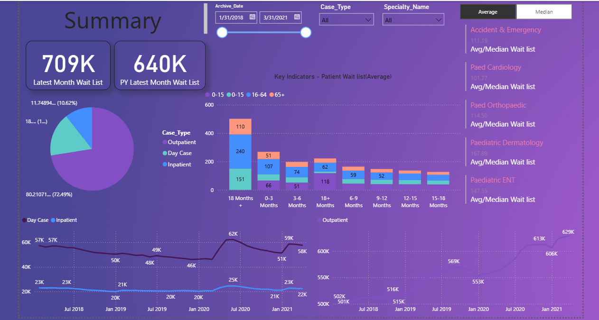
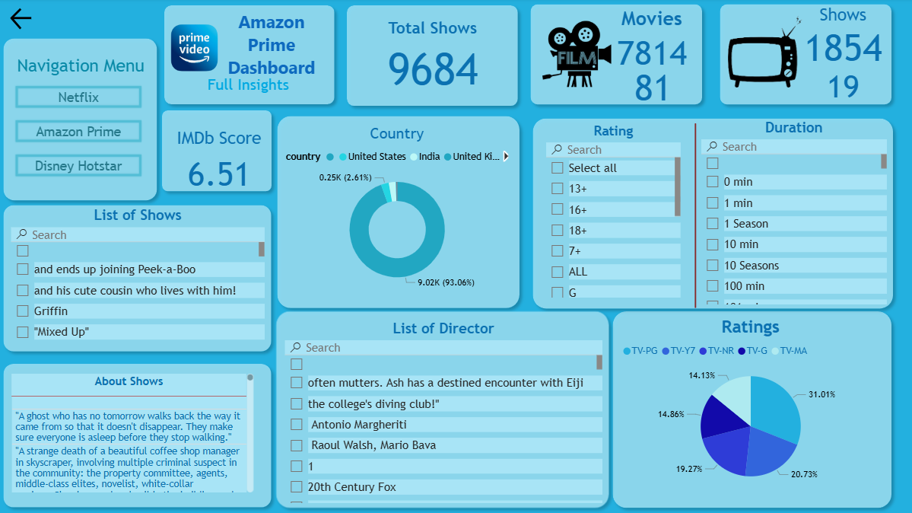
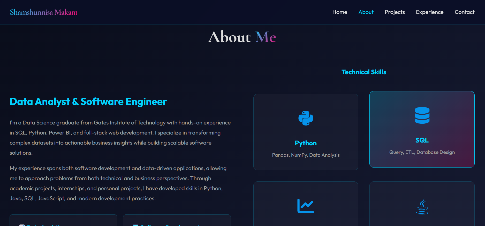
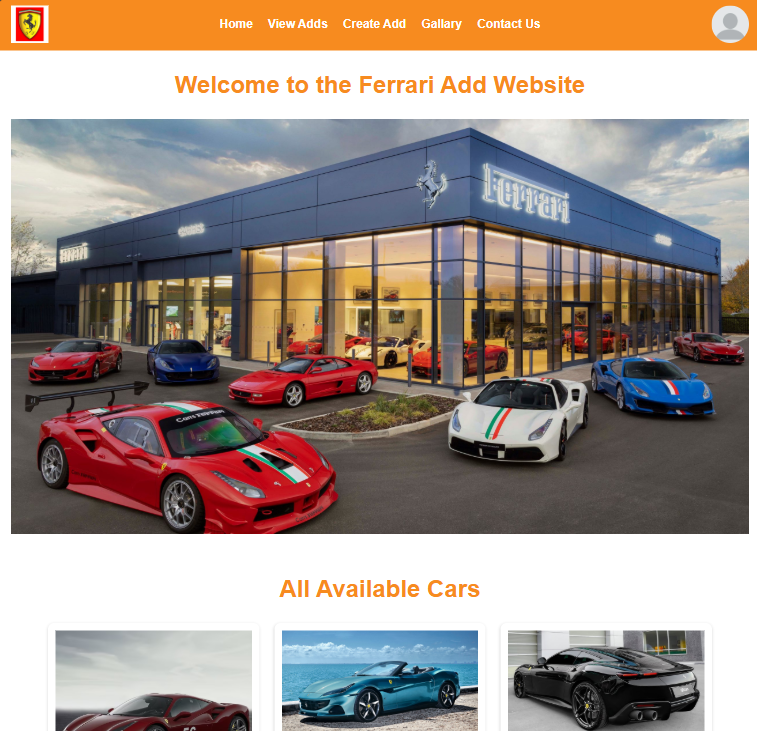
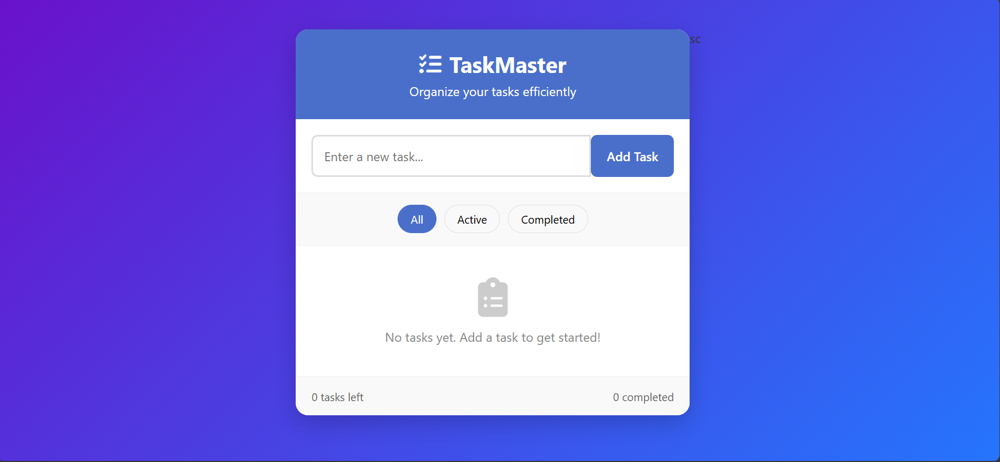

Transforming Data Into Insights,
Building Digital Solutions
Data Analyst & Software Engineer | SQL • Python • Power BI • Full Stack | Based in Bangalore

Data Analyst & Software Engineer | SQL • Python • Power BI • Full Stack | Based in Bangalore
I'm a Data Science graduate from Gates Institute of Technology with hands-on experience in SQL, Python, Power BI, and full-stack web development. I specialize in transforming complex datasets into actionable business insights while building scalable software solutions.
My experience spans both software development and data-driven applications, allowing me to approach problems from both technical and business perspectives. Through academic projects, internships, and personal projects, I have developed skills in Python, Java, SQL, JavaScript, and modern development practices.
SQL queries, data visualization, Power BI dashboards, Python analysis
Full-stack web dev, responsive design, JavaScript, React basics
Data modeling, ETL, DBMS concepts, data quality
Vice President Women Empowerment Club, event organization
Pandas, NumPy, Data Analysis
Query, ETL, Database Design
Dashboards, DAX, Visualizations
OOP, Data Structures
HTML, CSS, JavaScript
Tableau, Looker, Excel

Interactive Power BI dashboard analyzing patient and hospital data including waiting lists over 3 years. Generated insights for operational improvements.
View Details →
Comprehensive analysis of streaming platforms examining usage patterns, content distribution, and user engagement through interactive visualizations.
View Details →
Responsive portfolio website showcasing projects and skills. Built with clean HTML, CSS, and JavaScript with modern design principles and smooth interactions.
View Project →
Dynamic booking interface with responsive design. Features user validation, form handling, and smooth interactions across all devices.
View Live →
Interactive task management application with add, edit, and delete functionality. Built with vanilla JavaScript for dynamic user interactions.
View Live →Interactive web application built with Budibase no-code platform. Demonstrates ability to build functional solutions quickly with modern tools.
View Live →SURE Trust • Dec 2024 – May 2025
Built and optimized datasets using Python and SQL. Performed data cleaning, transformation, and validation. Developed interactive dashboards and collaborated with stakeholders to deliver actionable insights.
SURE ProEd • Sep 2024 – Mar 2025
Wrote complex SQL queries for data extraction and transformation. Designed Power BI dashboards to track KPIs and identify trends. Built data solutions for Healthcare and OTT platform analysis.
Gates Institute of Technology • 2022 – 2026
Comprehensive education in Data Structures, Algorithms, DBMS, and Statistics. Completed various projects combining analytics and full-stack development. Active in campus leadership roles.
Academic Excellence
Gates Institute of Technology
Outstanding Performance
Gates Institute of Technology
Certified
SUREProEd
Certified
NPTEL
Certified
EduSkills
Certified
Smart Bridge
I'm always interested in hearing about new projects and opportunities.
shamshunnisamakam@gmail.com
Bangalore, Karnataka
9346090610